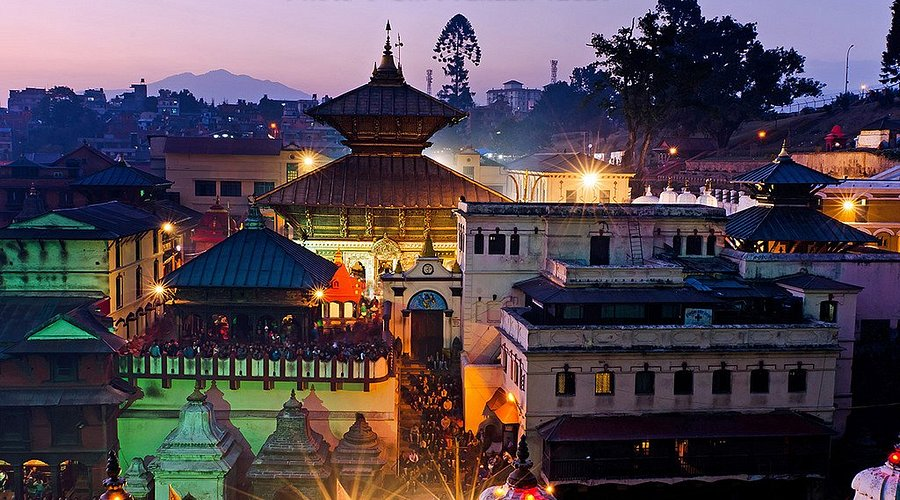
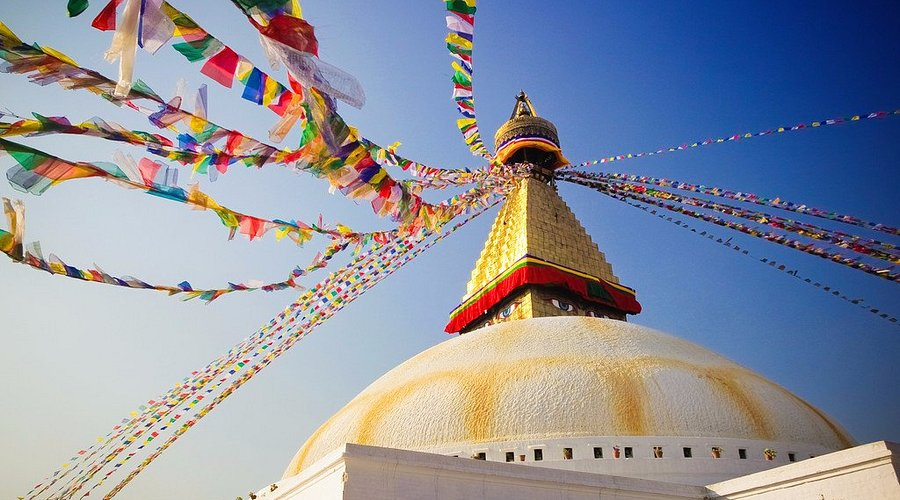

Top three activities to do at Nepal

Pahupatinath Temple

Boudhanath Stupa
Thamel
Pashupatinath Temple, place of worship in the Kathmandu Valley on the Baghmati River, on the eastern outskirts of the city of Kathmandu, that is the holiest site in Nepal. It is devoted to the Hindu god Shiva in his form as Pashupati, protector of animals.
Boudha stupa is semicircle shaped and contains the relics and remains of Buddha. The stupa's massive mandala
Thamel is known for its narrow alleys crowded with various shops and vendors. Commonly sold goods include food, fresh vegetables/fruits, pastries, trekking gear, walking gear, music, DVDs, handicrafts, souvenirs, woolen items and clothes.